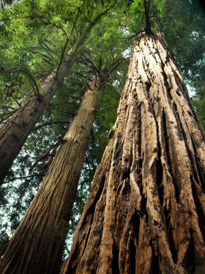

夜半钟声
冯冯
去去来来. / .誊录
从旧金山北上往西雅图，有两条主要公路，一条是内陆线，一条海线。内陆线平坦宽阔，直奔数十里尚无须转弯，而且是双行的快车大道，一边来，一边去，每一边可以同时平行同跑四路车子，十分便捷，只有到了沙士山区之时才稍微曲折。沙士峰雪景之美，若比之富士的主峰剑峰，固然不及远甚，但配上沙士湖的山光湖色，也差可比拟庐之湖一带的小火山。从公路望下去，沙士湖水苔绿，水脚褐黄，山线层次分明，形状有如海棠叶之曲卷，雪峰倒影，另有一种荒凉之美。
山线过了沙士峰以北，下了山，进入奥立冈平原，处处树林人家，公路直通百里，几乎可以不必转动驾驶盘，任由车子自己直开，但是若论沿途风景，就无甚值得一提的了。车行到此，猴儿总是睡觉的居多，因为太乏味了，只可惜睡又睡不着。
海线不及山线快捷，要多走五小时，因为一零一号公路大部分是沿着海岸边缘前进，曲曲折折，而且不若山线快车大道之宽阔。但是沿途景色之美，无法形容，即使你是三天三夜失眠，疲倦不堪，至此也精神百倍，全神欣赏，目不暇接，不能旁瞬的。
海线一零一号公路，离开金山，开上著名的金山大桥，俯望金山市区，浓雾笼罩，房舍密密拥在一片，不知怎的，突然叫猴儿看了觉得悚然心惊。住在金山的人一定会骂我如此乱说，但当时猴儿看见的只是一片颓墙断瓦，完全是个废墟的样子。又像是一片密集的茔地碑林，看了心头十分难过，再想想，自己也不过是如此罢了，谁又能跳得出去？那些金融大楼，那些银行，忙忙碌碌，苦苦营谋，锱铢必较，都不过是做了自己贪欲的奴隶罢了，就算富如侯活休斯，他又带了几文而去？
那金山底下的地壳载浮载沉，移移动动，金门桥上浓雾翻腾，数百尺下，轮船有如玩具，人影一闪，又有名人跳桥自杀，那一点灰色西装，直落大海，飘飘荡荡。（注：数月之后，果有议员跳桥自杀，身穿灰色西装。）
到得北岸山上，依然阳光普照，回望金山，依然是宏伟华丽，气派十足，毫无异样，摩天大楼，玻璃高塔，都浮在云雾之上，好象是神话中的云中仙国，金门大桥卧云，更显壮丽。
此后沿途都是荒山衰草，一片焦黄，瘦牛成群，老马处处。看见这些动物骨瘦如柴，心中十分恻然，加州奇旱，到处无水，连这些牲口都吃不饱了，可怜又要给人榨奶，还难逃屠刀，真不知那些美国人怎么吃得下牛排的，西岸沿途所见牲口都是如此瘦弱，美国人号称富裕，讲究人道，看来也不过是徒有虚名罢了。
那些山下全无水源，全靠下雨。橡树零星生长于山谷低地，也要根深三十尺以下才能勉强吸得少许水分，橡树也大多干枯半死。一路上都是如此景象，直到过了“生命谷”以后，情形才较为好些，以后开上更大山区，公路越来越窄，转来弯曲，转到加州北部，天已黑了。猴儿打了一阵瞌睡，醒来时已经进入尤力卡市区，风景至此为之一变，全是海景了。只见海面浮灯成串，闪闪不定。东山月出，有如银盘，海堤飞雪，沙滩上野火点点。
自此以后，海岸全是天然荒野，不见人家，美国政府现在不准私人占有风景海滩，不准建造私人房舍独霸胜景，这是一件值喝采的新政，把天然胜景保存其原有风味，指定为国家公园，海滩森林一律留给大众享受。要不然有钱人都把海滩名胜占尽，穷人别想去观光了。加州南部就是如此，弄得到处是私人海滩，插牌禁入，有些甚至设立了铁丝网，雇了枪手防守，铜臭得可憎可恨！幸而美国政府还算保留了北加州与奥立冈海岸的天然景色。
加州与奥立冈交界的两百里海岸公路，才是全线胜景精华所在。这一带公路在海边蜿蜒前进，忽高忽低，忽而悬崖凌空，车轮之下，怒涛雷奔，乱石崩云，飞瀑激雪，惊险不亚于台湾东岸的苏花公路悬崖，景色亦颇为相似。忽而飞坠浪边，狂澜直压窗外，有如雪崩堆来，忽而沙滩平坦，小山处处，海中秀峰座座，状如桂林山水，峰顶孤松傲立，岩石苍古，海水回流。忽而断崖数十里，海浪百尺，排排猛攻，月影化为千点万片于倒流浅水，风声吼然与海涛争雄，雄伟之象则更胜苏花公路多矣。
猴儿看得十分着迷，巴士上一车旅客此时全皆睡着，就只有猴儿独享美景，越看越有精神，看得连气都不敢喘了，此线猴儿以前都是白天走过，已经叹为观止，谁知月夜之下，更胜日间十倍，那种凄迷神秘的气氛，更非人间所有。
海岸已尽，再折入内陆山线，此处全是三百尺高的千年红木，公路在红木森林之中穿过，两旁全是十人可以合抱的巨大红色树身，仰望天顶，全为树梢所遮，不能再见月色，只见一线蜿曲天光，难怪山海经称此处有神木高及万仞了。山海经是一本奇书，所载遍及北美南美南洋各地风光，猴儿幼时曾一阅，仍有依稀印象。直到在海外才一一印证此书内容之不谬，可惜现在想找一本也找不到，否则当可一一注解它是何地何处，免得后来读者以为它是神话而已，它不是神话，它是一本中国古代对于世界地理的记录。中国古人早已遍游海外，遗迹到处，可惜笔记都保存不下来。这些是题外话，以后另外再谈。
却说猴儿坐在巴士前面第一个位置，面前是车头玻璃，有如宽银幕，一切景色都尽收眼底，眼望两边红木森林，有如顶天巨人，排排后退，此时林中黑暗无比，车头灯光照着雾气，前后均无车辆，只闻车轮碾压柏油之声，路旁不时出现细小如狼犬之黑水鹿，踟蹰不前。念佛之余，猴儿心中忽然渐渐澄清无比，光明大放，听见音乐钟声，然后又闻钟敲十二下，那钟声正似英国伦敦钟塔之声，十分熟悉，视之则为温哥华钟楼之大钟，又见我母背痛卧床，盼我早归之状，心中不禁凄然不安。
此时车内无灯，猴儿生平不带手表，不敢确定，于是就问司机之黑人，是否十二点正午夜？司机开小灯看表，正是十二点过一分。他反问我如何猜得如此准确？猴儿无言以对。
想起平时在温哥华居家夜读，每每听闻此钟楼敲出时间，验之皆准，而我住处为郊外，距钟楼十余英里，平时偶然问及邻人，无人曾经听见，都斥我为妄。温哥华日夜有万车奔驰，百船出进，百机飞行，噪音至伙，如何可以听到城中钟声数十里？想不到在奥立冈红木森林中亦听到此钟声，距温哥华尚有八九百英里，真是岂非奇怪？
为求实证，再听到钟声时，又与司机验时，凡五次，都无错误，猴儿无法解释，唯有默然自识而已。
思及唐人张继诗句：“姑苏城外寒山寺，夜半钟声到客船。”良有以也。每见有人斥之为妄，说寒山寺在城外数十里，如何得闻？猴儿今乃知张继之不妄。钟声之音波若产生超音之波，心静之人偶然感受，何足为异？千里亦为咫尺而已。
猴儿曾养一幼犬，每闻其无端哭号叫喊，后来静心细察，乃知此犬可听闻数十里外之警车及救护车之呜呜声，惊恐而啼，跑来依人，我每闻钟声之时，此犬亦昂首相向竖耳而听。
再说猴儿在车上见吾母辗转病榻，不禁泪下，归心似箭，恨不得巴士变为飞机，立即飞到家中，心绪一乱，旋即又一无所闻，一无所见，但见森林黑沉有如地狱，而前途渐见灯火，到达可容汽车钻过之红木树洞公路，吾猴亦无心观望了。
永忏楼随笔之十二──《夜半钟声》
原载香港《内明》第62期：1977年05月1日
书名：夜半钟声
作者：冯冯
出版：天华出版事业股份有限公司